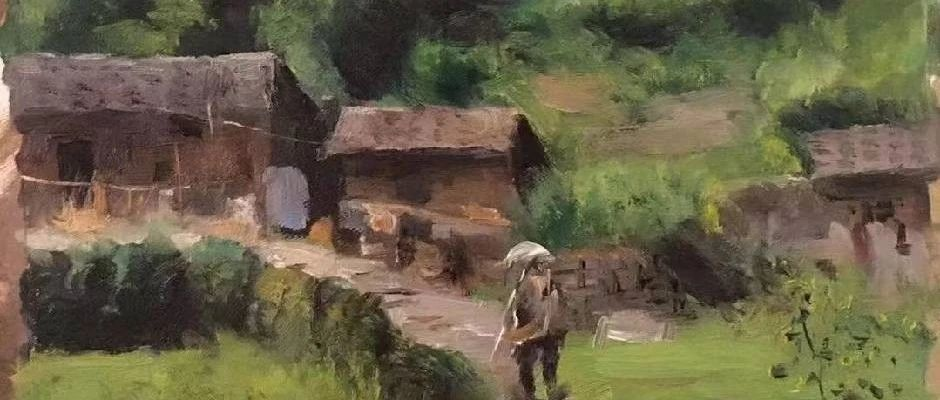

《樂與父談詳》
宋氏製，羅氏產……
樂:我是你在激情下製造的，
還是有計劃下製造的呀？
父:看了我一眼，你是從石頭里崩出來的。
樂:啊哈哈哈，哪意思是說我是孫猴子嘍！
父:不知道。
樂:那我叫了你十幾年的爸，要改口嘍！
父:不知道。
樂:哎，叫了十幾年叫習慣了，就接著叫你爸吧。人前叫你爸，背後還叫你“老農民”。
父:隨便。
樂:嗯。我是“老農民”滴兒子“小農民”。
樂:你說製造商和生產部，生產出來的產品不合格怎麼辦。
父:不合格還生產出來。
樂:如果生產出來的產品，零件不合適怎麼辦。
父:那就換掉不合適的。
樂:嗯。那需不需要通知產家。
父:以經出售，概不退換。
樂:那我的零件也不合適，
也需要更換。
父:…………？
我和我家“老農民”的關係，
永遠都是☞三句話☜
就像程咬金的三板斧。
未進家門
先看對方一眼。
《1》我會先開口問
一句最近過的怎麼樣。
老農民:好得很。
《2》個找老伴來？
老農民:沒有，等你回來給我找。
《3》自己照顧好自己，不要等哪天病了。好酒，就喝不到了，不要等那時候《好酒》給你當點滴打，怕那時候你無福消受。
老農民:還是兒子懂我。
生活了二十四年的“老農民”
我不懂你誰懂你……